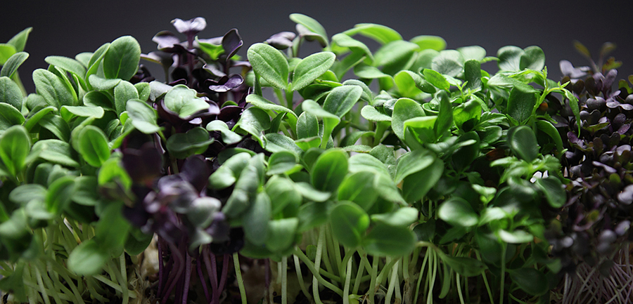

БАЗИЛИК
Еще один популярный вид микрозелени. Существует много разных сортов базилика, которые отличаются по цвету и вкусу. Некоторые вкусы пряные и сладкие, а другие напоминают лимон и корицу. Отлично подходит ко всем блюдам, является прекрасным дополнением соленого творога и омлета.
Особенность базилика в его клейких семенах. Когда они намокают, вокруг них образуется липкая гелеобразная капсула. Ее основная функция — защитить семена от негативных условий окружающей среды. Поэтому важно равномерно распределять семена, чтобы они не слипались в одном месте.
Сколько же пользы в микрозелени базилика? Витамины (А, С, Е, В1, В2, В6, В9, РР), каротин, марганец, кальций, калий, магний, натрий, фосфор, цинк, железо, эфирные масла, ценные аминокислоты (аргинин, валин, лецин, лизин, метионин, гистидин, триптофан, фенилалалин). Он хорошо сказывается на работе органов пищеварения. Микрогрин содержит антиоксиданты, борющиеся с болезнями, является отличным противовоспалительным средством, имеет антибактериальные свойства и помогает бороться со стрессом и депрессией.